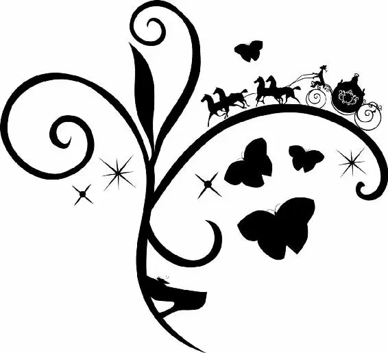

The day of the ball arrived quickly. As the afternoon sun began to sink, Ella found herself running back and forth between her stepsisters’ and stepmother’s rooms, helping the ladies prepare for the evening.
Standing in their bright and shiny new gowns, Anastasia and Drisella pretended to admire each other. The sisters had gotten dresses that matched in every way besides color. Anastasia’s was a bright pink, Drisella’s a loud yellow. Both had elaborate corsets that Ella had been forced to tie as tightly as possible.
“A vision, Sister,” Anastasia said, her breathing labored. “Truly.”
Drisella nodded. “Likewise.”
“We must compete for the prince’s hand,” Anastasia went on, picking up a fan that matched her dress. “Let it not mean we harbor dark thoughts against each other.”
“Of course, dear sister,” Drisella replied. “I would not dream of poisoning you before we leave for the ball.”
“Or I of pushing you from the moving carriage on the way there,” Anastasia countered.
As they continued slinging thinly veiled barbs at each other, Ella moved about the room, picking up discarded accessories and putting them away. She was eager to be done so that she, too, could get ready. Yet all the talk of the prince had made Ella curious.
“What will he be like, I wonder?” Ella asked.
“Like?” Anastasia laughed. “What does it matter what he’s like? He’s rich beyond reason!”
“Would you not like to know a bit about him before you marry him?” Ella asked, thinking of Kit and the way his dark brown hair had waved gently about his face. The way he had smiled and the way he had stuttered when she flustered him. She wanted to know more. She wanted to know everything about him.
Her sisters, it seemed, were not of the same opinion. “Certainly not!” Drisella cried. “It might change my mind.”
“I bet you’ve never even spoken to a man,” Anastasia sneered.
“I have,” Ella said, Kit’s face flashing in front of her again. “Once. To a gentleman.”
“Some menial, no doubt,” Anastasia countered. “Some prentice.”
Ella was unashamed. “He was an apprentice, yes.”
“All men are fools,” Drisella said, parroting something her mother had said once. “The sooner you learn that, the better.”
Ella did not bother to reply. Instead, she simply went back to cleaning. Not for the first time, Ella felt pity for her stepsisters. No matter how shiny or bright their dresses, it would be difficult for them to ever know happiness with such ugly outlooks on life.
(A remarkable child, truly wise beyond her years. But I suppose I’m interrupting again. Go on, gentle reader, go on.)
A short while later, Lady Tremaine made her appearance at the top of the stairs. Unlike her daughters, whose bright dresses seemed garish and tacky, Lady Tremaine was the picture of refined elegance. Her emerald-green gown complemented her red hair, which was stylishly coiffed.
She gracefully descended the staircase and came to a stop in front of her daughters. Looking them up and down, she appraised them with a critical eye. “My dear girls,” she said, “to see you like this… it makes me believe that one of you may just snare the prince. And to think I have two horses in the race…” She kissed each of them on the cheek, then added, “I dare say no one in the kingdom will outshine my daughters.”
Then, from the landing at the top of the stairs, there came a rustle. As Lady Tremaine turned, her eyes grew narrow and her face flushed. Standing there, in a gown that was old-fashioned but infinitely more elegant than her daughters’ new gowns, was Ella. Her face glowed with excitement, her eyes sparkling and her hair falling about her shoulders in perfect waves. She was, in a word, stunning.
Smiling nervously, Ella walked down the stairs. “It cost you nothing,” she explained. “It’s my mother’s old dress, you see. And I took it up myself.” She lifted the skirt of the dress to prove her point. She had spent every evening after her chores were done laboring over the dress. It had been painstaking work, but when she had finally seen herself in the small looking glass in her room, she had known it was worth it. She had only wished at that moment that her mother could have been there.
Lady Tremaine took a deep breath and collected herself. The girl was far too beautiful. She needed to make sure Ella did not attend the ball under any circumstances, or Ella would undoubtedly outshine her daughters. After living with Ella for some time, she was not so foolish as to think anger would get through to the girl. No, she needed to manipulate Ella. Bringing a hand to her heart, Lady Tremaine said, “After all I’ve done—feeding you, clothing you, resisting every impulse to turn you out of doors, you try to… to embarrass me in front of the court?”
Ella was taken aback. “I… I… I don’t want to embarrass you,” she stammered. “I’m not going in order to meet the prince—”
Lady Tremaine cut her off. “There’s no question of you going… at all.”
“But all of the maidens in the land are invited,” Ella protested feebly. “By order of the king.”
“It is the king I am thinking of,” Lady Tremaine shot back. “It would be an insult to the royal personage to take you to the palace in those old rags.”
“Rags,” Ella repeated, the word sticking in her throat. She looked down at her mother’s dress. It was one of the few reminders left of the woman who had filled this house with so much love. Bitter tears welled up in Ella’s eyes and she rubbed them away. She didn’t want them to see her cry. She needed to stay strong, in honor of the promises she’d made and the dress she wore.
Lady Tremaine seemed unbothered by the emotions racing across Ella’s face. “This… thing…” she sneered, “is so out of style that it’s practically falling to pieces. Look, the shoulder is frayed.” Reaching out, Lady Tremaine pulled on the sleeve, hard. There was a loud rip and Ella gasped. But her stepmother wasn’t done. She grabbed the shawl Ella had wrapped around her shoulders. Then she ripped that, too. Taking the cue from their mother, Anastasia and Drisella began to pull and tug at Ella as well. When they were done, the dress was destroyed.
Ella wrapped her arms around herself, shame and anger coursing through her body. “How could you?” she asked, her voice trembling.
“How could I otherwise?” Lady Tremaine retorted. “I will not have anyone associate my daughters with you. It would ruin their prospects to be seen arriving next to a ragged servant girl.” She paused, leaning in close to Ella. “Mark my words. You shall not go to the ball.”
Later, as her stepfamily’s carriage faded from view, tears filled Ella’s eyes and she sank to the ground. She would never see Kit again. And she knew that after that day, her stepmother’s hold on her would only tighten. Ella shuddered. Her fate seemed locked. And for once, she couldn’t find the courage to smile through her pain.
Hearing footsteps behind her, Ella quickly wiped away her tears and turned. An old beggar woman stood there, leaning heavily on a gnarled wooden cane. The woman’s clothes were rags and she looked ravenous. Ella felt a pang of guilt. This woman knew true hardship.
(The beggar woman! Did I not tell you she would be important? Keep going, my little reader. It’s about to get very interesting.)
“Can you help me, miss?” the beggar woman asked, her voice weak. “Just a little crust of bread. Or better, a cup of milk?”
“Yes, I think I can find something for you,” Ella said, pushing herself to her feet. But the action made her mother’s dress, already in shreds, rip further, and the tears she had been fighting to stop started again. Focusing on the task at hand, she rushed into the house and poured a large serving of milk into a bowl. Then she carried it out to the beggar woman.
“You’ve been crying, my dear,” the old woman said when Ella returned.
“It’s nothing,” Ella replied, trying to sound stronger than she felt.
The old woman shook her head. “Nothing? What is a bowl of milk? Nothing. And everything. Kindness is so rare these days,” she said, taking the bowl. She sipped the milk and smiled in satisfaction. “Thank you. Now, I don’t mean to hurry you, but we haven’t got long, Ella.” The beggar woman began to walk around to the back of the house.
Behind her, Ella cocked her head. How had the beggar woman known her name? She ran to catch up, following the woman into a large garden. “Who are you?” she asked breathlessly.
“Who am I?” the beggar woman repeated. “Well, I should think you’d have worked that out.” When Ella said nothing, the woman shrugged good-naturedly. “I’m your fairy godmother, of course.” (Surprise!)
